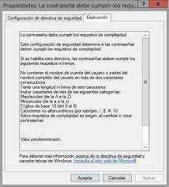

MANTENIMIENTOS
MANTENIMIENTO PREVENTIVO
Se define como mantenimiento preventivo a la acción de revisar de manera sistemática y bajo ciertos criterios a los equipos o aparatos de cualquier tipo (mecánicos, eléctricos, informáticos, etc…) para evitar averías ocasionadas por uso, desgaste o paso del tiempo.
mantenimento programado
Se realizan por tiempo, kilómetros u horas de funcionamiento.
mantenimento predictivo
Es realizado al final del período estimado máximo de utilización.
mantenimento de oportunidad
Se aprovecha el período en el que no se está utilizando el equipo para realizar el mantenimiento y evitar cortes de producción.

MANTENIMIENTO CORRECTIVO
Este tipo de mantenimiento corrige los errores del equipo que dependen de la intervención para volver a su función inicial. Estas prácticas de mantenimiento no dependen de los planes de mantenimiento y, por consiguiente, la posibilidad de que no haya piezas de repuesto en existencia es alta. Además, es posible que no encuentre ningún técnico de mantenimiento disponible para resolver el problema en este momento, ya que las fallas son totalmente imprevistas.
Mantenimiento correctivo no planificado
También conocido como impredecible se produce cuando los equipos sufren realmente una avería que a menudo da lugar a un tiempo de inactividad. Este mantenimiento no planificado puede ser el resultado de un fallo prematuro de las piezas o de la falta de supervisión del rendimiento del equipo. De cualquier manera, tiende a ser caótico, porque los procedimientos de reparación son de emergencia.

Mantenimiento correctivo planificado
También conocido como impredecible se produce cuando los equipos sufren realmente una avería que a menudo da lugar a un tiempo de inactividad. Este mantenimiento no planificado puede ser el resultado de un fallo prematuro de las piezas o de la falta de supervisión del rendimiento del equipo. De cualquier manera, tiende a ser caótico, porque los procedimientos de reparación son de emergencia.

REDES
REDES VPN
Una VPN (Virtual Private Network) permite a sus usuarios enviar y recibir datos como si sus dispositivos estuvieran conectados a la red privada, incluso si no lo están. De esta forma, a través de una conexión virtual, los usuarios pueden acceder a una red privada de forma remota. Así, una red de tipo VPN te permite crear una red local sin que todos los integrantes de la misma estén conectados entre ellos. Además este tipo de conexión de red permite que se pueda acceder a puntos de Internet que no serían accesibles desde nuestra propia conexión.

Redes LAN
Siglas de Local Area Network (en inglés: “Red de Área Local”), se trata de las redes de menor tamaño, como las que existen en un locutorio o cyber café, o un departamento. • Redes MAN. Siglas de Metropolitan Area Network (en inglés: “Red de Área Metropolitana”) designa redes de tamaño intermedio, como las empleadas en los campus universitarios o en grandes bibliotecas o empresas, que conectan distintas áreas alejadas entre sí.

Redes WAN
Siglas de Wide Area Network (en inglés: “Red de Área Amplia”), alude a las redes de mayor envergadura y alcance, como lo es la red global de redes, Internet.

REDES CAN
Más grandes que las LAN, pero más pequeñas que las que veremos a continuación, estos tipos de redes se ven típicamente en universidades. Así, nos encontramos ante uno de los tipos de redes informáticas más frecuentes en el ámbito académico.

REDES EPN
Este tipo de redes están construidas y son propiedad de empresas que desean conectar de forma segura sus diversas ubicaciones para compartir recursos informáticos. De esta manera, nos encontramos con distintos tipos de redes EPN y usos específicos para cada una de ellas. Y es que, hay que tener en cuenta que son las propias empresas las que las crean mantienen y dan permisos de acceso. Estos accesos pueden ser temporales para un uso concreto o permanentes en caso de ser necesario.

Redes SAN
Las SAN son redes informáticas de alta velocidad que conectan grupos compartidos de dispositivos de almacenamiento a varios servidores. Estos tipos de redes no dependen de una LAN o WAN. Estas redes alejan los recursos de almacenamiento de la red y los colocan en su propia red de alto rendimiento.

Redes POLAN
Como alternativa a las LAN tradicionales basadas en conmutadores, la tecnología POLAN se integra en el cableado para superar las preocupaciones sobre la compatibilidad con los protocolos Ethernet tradicionales. POLAN es una arquitectura de LAN de punto a multipunto que emplea divisores ópticos para multiplicar la señal de una hebra de fibra óptica monomodo para repartirla entre usuarios y dispositivos.

REDES WLAN
Al funcionar como una LAN, las WLAN utilizan tecnología de red inalámbrica, como Wi-Fi. Así, en esencia es lo mismo que una red LAN solo que presenta una conectividad de red inalámbrica.

DSEÑO WEB
DISEÑO
El diseño web implica trabajo relacionado con el layout y diseño de páginas online, así como la producción de contenido, aunque generalmente se aplica a la creación de sitios web. En este caso, los diseñadores web crean las páginas utilizando lenguajes de marcado como HTML o XML. Por otro lado, la parte visual de los sitios está a cargo del CSS, término utilizado para estilizar los elementos escritos en HTML. Por lo tanto, es común que los diseñadores web utilicen ambos para construir un site porque juntos definirán cómo aparecerán las páginas en los navegadores. El proceso de creación de sitios se puede realizar desde herramientas como Adobe Dreamweaver (que requerirá que el profesional sepa más sobre los códigos) y CMS que son plataformas de administración de contenido.

Responsividad
Como cada vez más las personas acceden a internet solo por teléfono celular, es muy importante que tu sitio sea adecuado para dispositivos móviles, es decir, que sea responsivo.
Escaneabilidad
¿Conoces esos correos electrónicos que tienen un "bloque de texto" porque todo el mensaje está escrito en un solo párrafo? Leerlos es demasiado agotador, ¿no es así? Bueno, lo mismo ocurre con los visitantes de tu sitio si el no considerar la escaneabilidad textual.

Tipografía
Si desde este punto comenzamos a escribir esta publicación con un tipo de letra completamente diferente, tu experiencia de lectura no sería muy agradable, ¿verdad? Después de todo, es una tipografía que no encajaría con el resto del contenido. Lo mismo debería aplicarse a tu sitio.

Velocidad de carga
En un mundo donde todos parecen estar siempre apurados, tener un sitio web de carga rápida es esencial. Según Google, los sitios que tardan más de 2 segundos en cargarse dañan tanto la experiencia del usuario como la indexación del sitio.

Diseño adaptativo
Se puede llegar a confundir con diseño responsive, pero hay ciertas diferencias que han hecho que el responsive web design le haya ganado el terreno. Y es que el diseño responsive se adapta literalmente mientras que el diseño adaptativo genera un diseño para cada dispositivo: teléfonos móviles, tabletas, desktop… Como su propio nombre indica, ¡se adapta!

Diseño web responsivo
Probablemente, estés interesado en saber cómo hacer una página responsive, pero no lo cubriremos en este artículo. Solo vamos a ver de qué se trata como parte de los tipos de diseño web. Basado en el uso de media queries, en español “consulta de medios”, la página responsive se modifica en función del tipo de dispositivo. Esta es una gran ventaja, ya que el tamaño del sitio web se ajusta de acuerdo al tamaño del navegador. Esto quiere decir que los sitios web responsivos cambian automáticamente para proporcionar la mejor experiencia de usuario a los visitantes.
Diseño elástico
Este diseño web adaptará el tamaño del texto cuando el usuario lo agrande o lo disminuya, pero esta adaptación no sucederá cuando cambie de dispositivo y, por lo tanto, de tamaño de pantalla. La segunda opción entre los tipos de diseño web que puedes utilizar es el diseño elástico. Este diseño web adaptará el tamaño del su texto de tu página web.
SEGURIDAD INFOMATICA
INFORMATICA
La seguridad informática —también llamada ciberseguridad— se refiere a la protección de la información y, especialmente, al procesamiento que se hace de la misma, con el objetivo de evitar la manipulación de datos y procesos por personas no autorizadas. Su principal finalidad es que tanto personas como equipos tecnológicos y datos estén protegidos contra daños y amenazas hechas por terceros. Es por esto que esta disciplina del área de la informática encargada de la protección de la privacidad de datos dentro de los sistemas informáticos se ha convertido en una parte indispensable para los negocios y la operación de las empresas.

Seguridad de hardware
Este tipo de seguridad se relaciona con la protección de dispositivos que se usan para proteger sistemas y redes —apps y programas de amenazas exteriores—, frente a diversos riesgos. El método más usado es el manejo de sistemas de alimentación ininterrumpida (SAI), servidores proxy, firewall, módulos de seguridad de hardware (HSM) y los data lost prevention (DLP). Esta seguridad también se refiere a la protección de equipos físicos frente a cualquier daño físico.

Seguridad de software
Usado para salvaguardar los sistemas frente ataques malintencionados de hackers y otros riesgos relacionados con las vulnerabilidades que pueden presentar los softwares. A través de estos “defectos” los intrusos pueden entrar en los sistemas, por lo que se requiere de soluciones que aporten, entre otros, modelos de autenticación.
Seguridad de red
Principalmente relacionada con el diseño de actividades para proteger los datos que sean
accesibles por medio de la red y que existe la posibilidad de que sean modificados, robados
o mal usados. Las principales amenazas en esta área son: virus, troyanos, phishing,
programas espía.

Seguridad de la nube
Este tipo de seguridad es más concreto, pero sus acciones abarcan muchas plataformas y software que operan en la nube. Busca la protección de los datos y aplicaciones alojados en la nube, incluyendo la seguridad de su infraestructura y los datos almacenados en ella.

Seguridad de la identidad
Esta tiene que ver con la protección de la identidad digital de los empleados y los clientes, incluyendo el control de acceso y la autenticación de usuarios, incluyendo el SSO.

Amenazas informáticas internas:
Hablamos de este tipo de amenazas, precisamente cuando la amenaza inicia dentro de la empresa, pero a su vez, este tipo de amenazas pueden ser tanto intencionada como no intencionada. En el primer caso, cuando una amenaza proviene de una fuente interna y es intencionada, quiere decir que se ejecuta por parte de alguien que tiene pleno conocimiento y acceso a la red, dando vía libre a hacer lo que desee una vez accede a esta. En realidad este tipo de amenazas son muy delicadas, al existir “abuso de confianza” por parte de alguien a quien se le han otorgado todos los accesos.

Amenazas informáticas externas
Evidentemente es cuando las amenazas provienen desde afuera y quien las ejecuta no tiene acceso alguno a la red. En estos casos el atacante debe ejecutar tantos procedimientos como sea necesario para poder vulnerar accesos a la red. Este tipo de amenazas cuenta con una ventaja desde el punto de vista de la seguridad informática, puesto que se puede prever gran parte de los ataques, al no tener acceso directo. Dentro de las amenazas que se realizan “desde afuera” se pueden clasificar en diferentes perfiles de “atacantes cibernéticos”, los cuales pueden ser hackers, crackers, curiosos o intrusos remunerados, cada uno de los anteriores motivados por razones distintas.

NORMAS EN SISTEMAS INFORMATICOS
NORMAS
Las normas y estándares informáticos son de gran utilidad en los diferentes campos de la informática porque ayuda a gestionar el uso adecuado de la tecnología de información en las organizaciones; se han creado desde hace mucho tiempo atrás los estándares y normas que hoy en día rigen en torno a este mundo, para el desarrollo correcto de las actividades cumpliendo con los parámetros establecidos en la que se conseguirá la ansiada calidad. En este presente trabajo de investigación bibliográfica, inicialmente se procedió por entender los conceptos básicos de las normas y estándares informáticos, y diferenciar claramente.

Qué es ISO 27000
La ISO 27000 es una familia de normas que define cómo implementar un Sistema de Gestión de Seguridad de la Información (SGSI) en una empresa, creada por la Organización Internacional de Normalización (ISO).

27001
Norma que define cómo planificar y verificar un SGSI. Tras un análisis de riesgo, planifica acciones que mitigarán estos riesgos. Sus procedimientos abarcan rubros legales, físicos y técnicos.

27002
Es un código de 12 buenas prácticas para la gestión de seguridad de la información,
destacando la creación de:
.Plan de análisis de riesgo
.Política de seguridad detallada
.Departamento de gestión de activos
. Administración de operación y puntos de acceso
. Departamento de sistemas y mantenimiento de información

27004
Ofrece métricas para gestionar la seguridad, específicamente recomendaciones de quién, cuándo y cómo se deben medir estos parámetros.

27005
Se especializa en la gestión y evaluación de riesgos de seguridad. Para implementar cada norma, una entidad externa deberá elaborar dos auditorías minuciosas, una relacionada con la documentación y otra con la implementación.
Prevención de pérdida de datos (DLP)
Es necesario impedir que las personas accedan a información crítica no pertinente y la reenvíen fuera de la organización. Para lograrlo de forma adecuada, una correcta capacitación para el personal es fundamental. Incluso, se prevé que al finalizar 2021, el 90% de las organizaciones habrán implementado una forma de DLP.

Requerimientos de contraseñas
Establecer parámetros abordando la complejidad de contraseñas, dónde y cómo almacenarlas, y cada cuánto actualizarlas es otro parámetro que debe ser realizado de forma constante para garantizar las normas de seguridad informática. Esclarecer cuándo los colaboradores pueden compartir información sensible con otros, cómo identificarla y destruirla cuando sea necesario. Igualmente, debemos definir cuándo es apropiado compartir el email institucional, cómo bloquear y reportar spam y sitios sospechosos.
